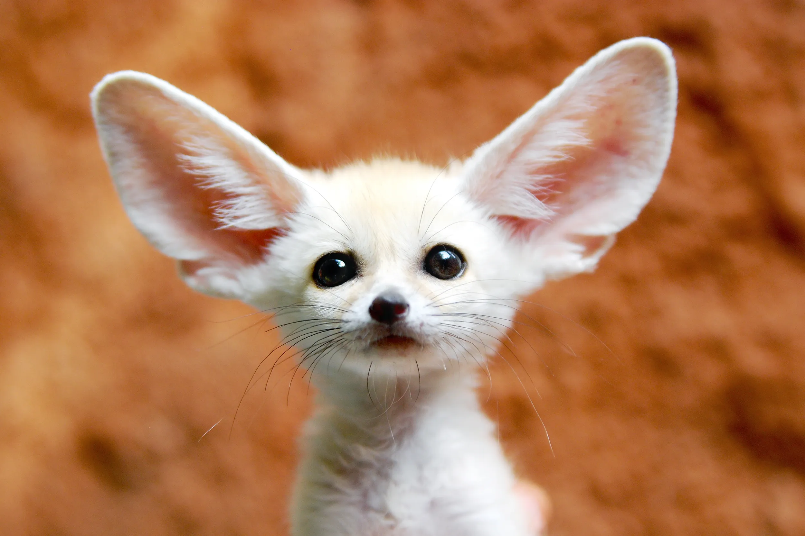
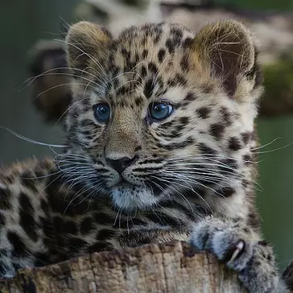

The tiger (Panthera tigris) is a large cat and a member of the genus Panthera native to Asia. It has a powerful, muscular body with a large head and paws, a long tail and orange fur with black, mostly vertical stripes.

The tiger (Panthera tigris) is a large cat and a member of the genus Panthera native to Asia. It has a powerful, muscular body with a large head and paws, a long tail and orange fur with black, mostly vertical stripes.
As of 2023, the global chicken population exceeds 26.5 billion, with more than 50 billion birds produced annually for consumption. Specialized breeds such as broilers and laying hens have been developed for meat and egg production, respectively.

The fennec fox (Vulpes zerda) is a small fox native to the deserts of North Africa, ranging from Western Sahara and Mauritania to the Sinai Peninsula. Its most distinctive feature is its unusually large ears, which serve to dissipate heat and listen for underground prey.
The red panda was formally described in 1825. The two recognised subspecies, the Himalayan and the Chinese red panda, genetically diverged about 250,000 years ago. The red panda's place on the evolutionary tree has been debated, but modern genetic evidence places it in close affinity with raccoons, weasels, and skunks.

The leopard was first described in 1758, and several subspecies were proposed in the 19th and 20th centuries. Today, eight subspecies are recognised in its wide range in Africa and Asia.
Cat communication includes meowing, purring, trilling, hissing, growling, grunting, and body language. It can hear sounds too faint or too high in frequency for human ears, such as those made by small mammals.